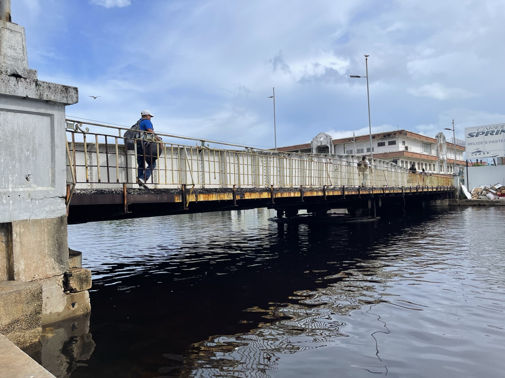

ベリーズ最終日。次の目的地への出発前に、ベリーズシティの中心部をもう一度歩いた。
スウィング・ブリッジ

ベリーズシティの中心部を流れるホードクリーク（Haulover Creek）にかかるスウィング・ブリッジ（Swing Bridge）は、街のシンボル的な存在だ。1923年に建設されたこの橋は、今でも手動で回転させることができる可動橋で、大型船が通る際には橋が90度回転して航路を開ける仕組みだ。現役で動く可動橋としては珍しい構造で、世界的にも知られている。
橋の上から川の両側を眺めると、ベリーズシティの日常が見える。小さな漁船、水上タクシー、川沿いに並ぶ建物。歴史的な橋と現代の生活が共存する光景は、この街らしいと感じた。
ベリーズを振り返って
ベリーズは中南米の中でも特異な存在だ。英語が公用語で、カリブ海のリゾート文化と中米の素朴な生活が混在している。スペイン語圏の国々とも、カリブ海の島国とも少し違う独自の空気がある。
グレート・ブルーホールの空撮は一生に一度見ておく価値があると思う。小型機から見下ろす深い青の円は、地球が長い時間をかけて作り上げた造形だ。ベリーズという国を知らなかった人にも、この景色だけで来る価値があると伝えたい。
ベリーズ滞在を振り返って
1
スウィング・ブリッジ
ベリーズシティ中心部、ホードクリーク上。1923年建設の手動可動橋。市内観光の定番スポット。
2
ベリーズシティ
ベリーズ最大の都市。首都ではなく経済・観光の中心地。フィリップ・ゴールドソン国際空港は市内北部にある。